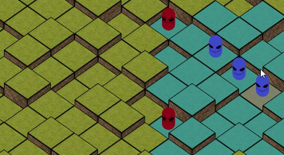
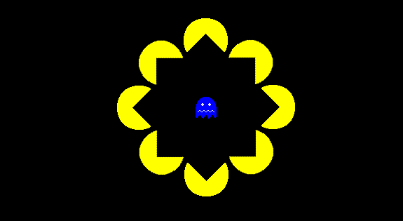

Portfolio
View some of my recent work

Game Programming / Game Design
Windborne
Racing game where you glide on dangerous skies. Made with Unreal Engine 4.
View DetailsGame Programming
Portotype
A strategy game prototype made to test Unity's porting capabilities - hence the wordplay title of Portotype. Created and successfully ported to Android, PlayStation Vita and PC using Unity.
View Details


Game Programming / Game Design
Pac Monster
Arcade survival game inspired by the classic Pac-Man. Made with GameMaker Studio.
View Details